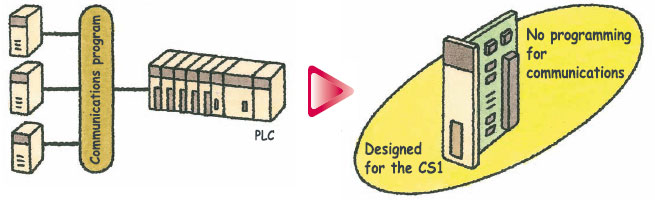

The accelerating wave of globalization calls for rebuilding systems to cope with changes in demand. And now OMRON has taken its wealth of technical know-how in factory automation and process control technology to create a PLC-based process control system.
Building Automation
Industrial Automation
Power Automation & Safety


Bangladesh Distributor
CS Series
Programmable Controllers
Fully Integrated Sequence and Process Control for the Ideal Control System for Every Application
about this Product Family
Related Contents
- Automation Systems
- Programmable Controllers
- Features
- Lineup
- Specifications
- Dimensions
- Catalog
last update: August 21, 2013
OMRON's PLC-based Process Control = Smart Proc ess Control
General-purpose PLCs provide everything from simple loop control to advanced process control to meet customer needs.
A Breakthrough
The open nature of the PLCs is joined by integrating hardware, software, and networking to meet your needs.
Increasing amounts of information, standardization, and open standards form the basis for achieving hardware and networking capabilities for process control.
A wide range of software that can be easily used by design, development, and maintenance personnel makes operating and maintaining the system far easier.
*For details on the CJ Series, refer to the Loop-control CPU Units Catalog (R128-E1).
Windows is a registered trademark of the Microsoft Corporation. DeviceNet, DeviceNet Safety, CompoNet, and EtherNet/IP are registered trademarks of the ODVA.
Other company names and product names are the trademarks or registered trademarks of the respective companies.
Going Beyond the Traditional Limits of PLCs with PLC-based Process Control
Reducing the Total Cost of Ownership from Initial Costs through Running Costs.
PLC-based Process Control Meets Customer Needs
Existing System Problems
Systems are large, meaning high initial costs.
The over-spec nature of a distributed control system (DCS) increased costs. PLCs, however, could not provide the required process control capabilities, and signal conversion with isolators and other devices was required for I/O. It was just not possible to achieve the ideal system for a specific application.
PLC-based Process Control
[Down Sizing]
Cut costs, Save space, Reduce labor
PLCs provide the some of the functions and performance of DCS while also providing the advanced features of PLCs: Open specs, easy maintenance, and cost performance. A wide range of Isolated-type Analog Units helps to save space and greatly reduces system costs.
Existing System Problems
Running costs are high because maintenance and modifications require specialists.
The manufacturer must be relied upon for everything from system construction to maintenance. Even simple changes to parameters cannot be performed in-house. And, it's nearly impossible to use general-purpose devices and software (such as HMI devices or Windows-based software) when modifying the system.
PLC-based Process Control
[Easy Engineering]
Engineering is simple when you can program with function blocks.
Paste function blocks in a window just like you were creating a flow sheet, and then connect the blocks with the mouse to graphically program a wide range of process control. And with a PLC, it's easy to incorporate general-purpose HMI devices and software (such as touch panels and SCADA software).
Avoid Problems and Minimize Risks with a Duplex System
Increase the reliability of the facilities and devices with a Duplex PLC-based Process Control System.
If an error occurs in the active CPU Unit, the standby CPU Unit takes over in an instant (using the hot standby method) so that system operation continues essentially unaffected. Other duplex variations are also possible. For example, instead of duplexing the CPU Unit, Power Supply Unit, and Controller Link Unit, a system can be constructed with a Single-CPU Unit and only a duplex Power Supply Unit or only a duplex Controller Link Unit.
A duplex system means rapid recovery for errors.
Replace Units with power supplied or even while the system is running, including CPU Units (Duplex-CPU system), Power Supply Units, Communications Units, Basic I/O Units, and Special I/O Units.
PLC-based Process Control Application Examples
A Revolutionary Solution to Process Control Advanced Controller Functions in a PLC
For easier loop control, for advanced PLC-based analog control: The New SYSMAC CS1-based Solution
Existing System Problems
Excessive installation space is required.
When using more than one controller for multi-loop control, the control panel is just too big. And specification changes required altering the control panel, making changes difficult.
PLC-based Process Control
[Down Sizing]
Consolidate the functions of many controllers
Programming is as simple as combining the function blocks required by the application. To increase the number of controlled loops, just add them to the program. HMI windows can also be created easily using a wide range of utility software.
Existing System Problems
Programming communications with the controllers is extremely difficult.
Communications must be programmed to input data to the PLC. And communications time can restrict control performance. The more controllers that are used, the more difficult maintenance becomes.
PLC-based Process Control
[Easy Engineering]
Advanced controller functions are built into the CS1 PLCs. No programming is required for communications.
The Loop Control Boards and Units were designed for the CS1 PLCs and require no communications programming. High-speed, flexible data links can be created with the PLC to increase control performance.

Gradient Temperature Control for Planar Temperature Control Across Multiple Points
Note: CS1W-LCB05-GTC only.
Gradient temperature control equalizes the temperatures at multiple points, providing high-quality heat processing, reducing energy loss until temperatures stabilize, and saving labor in adjustments due to interference between heaters.
Example:
Planar Temperature Control of Multi-stage Furnaces, Wafer and Glass Surface Temperatures, and Other Applications.
Compact CJ-series Loop-control CPU Units ideal for equipment built-in controller applications have been added to the series, further expanding the selection to suit the application.
last update: August 21, 2013